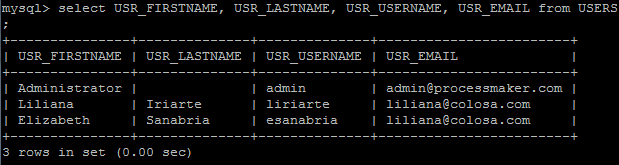
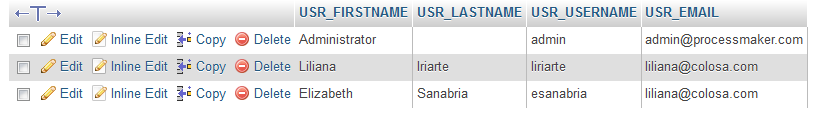
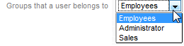
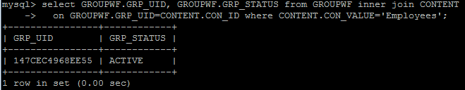
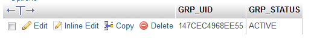
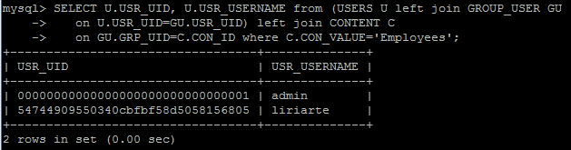
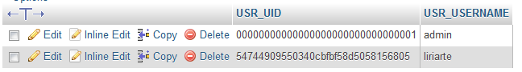
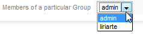
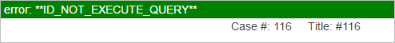

- From the Command Line
- From the phpMyAdmin GUI
- Finding ProcessMaker Objects
- Examples
- Using ProcesMaker classes to lookup translations
- Protecting Processmaker Core Tables and PM Tables
- MySQL 5.7 Recommendations
All the information which ProcessMaker stores is held in one MySQL database for each workspace, which are generally named wf_<workspace>. This information can be easily looked up and even modified with MySQL or a graphical interface such as PhpMyAdmin to access MySQL databases. It can also be consulted from within ProcessMaker using the executeQuery() function in triggers.
- Note: By default, MySQL tables are not case sensitive in Windows, but they are case sensitive in Linux/UNIX. See the MySQL documentation. The ProcessMaker table and field names are in lowercase in Windows installations, but they are in UPPERCASE in Linux/UNIX systems. When creating SQL queries to access the ProcessMaker databases, it is recommended to spell the table and field names in UPPERCASE, since those SQL queries can be used in both Windows and Linux systems. For example, refer to USERS.USR_USERNAME, rather than users.usr_username or Users.Usr_Username.
From the Command Line
The ProcessMaker database can be accessed from the command line of your operating system with mysql (or from your web browser with mysqladmin). Enter MySQL as the root user (or whichever user was configured to the MySQL databases for ProcessMaker). If you have forgotten this password as well, see these instructions to reset the root password.
Login into MySQL
In Windows open the Command Prompt (found at Start > All Programs > Accessories > Command Prompt) and enter:
Examining the databases
Once inside MySQL, examine the available databases:
Switch to a particular database:
See all the tables in a database:
Examine the structure of a table:
Exiting MySQL:
From the phpMyAdmin GUI
The ProcessMaker databases can be accessed with a graphical interface by using phpMyAdmin. The Windows installer for ProcessMaker automatically installs phpMyAdmin by default, but for Linux/UNIX, it will have to be manually installed.
To use phpMyAdmin, enter the address http://IP-ADDRESS/phpmyadmin in your web browser. For example, if ProcessMaker was installed on the local machine, use the address http://localhost/phpmyadmin . The Windows installer for ProcessMaker automatically created the user "administrator", so login to phpMyAdmin as "administrator" with the password which you entered during the installation.

Finding ProcessMaker Objects
Objects in ProcessMaker such as users, groups, processes, tasks, cases, DynaForms, database connections, etc. are identified by their UID or unique identification, which is a string of 32 hexadecimal numbers generated by ProcessMaker. In most cases, the individual tables which hold information about ProcessMaker objects do not include their names (i.e, titles or labels), so it is very hard to know which object is being referenced in the table.
Instead the name of most objects (except users) is stored in the wf_<workspace>.CONTENT table. To find out information about a particular object, look up their names and their matching UID in the CONTENT table, then look up the information about the object in their particular table.
To find types of elements in the CONTENT table, look for the following values in the CON_CATEGORY field:
| Category | Description |
|---|---|
| 'APP_TITLE' | The title of a case, which contains the case number such as "#234" by default, but can be set in the properties of the tasks int the process. |
| 'APP_DESCRIPTION' | Case description, which can be set in the properties of the tasks in the process. |
| 'APP_DOC_COMMENT' | The comment added to an uploaded file in an Input Document. |
| 'APP_DOC_FILENAME' | The filename of a file which is uploaded to an Input Document or File field or generated as an Output Document. |
| 'APP_DOC_TITLE' | The title of a file associated with a case. This feature is deprecated and no longer used in version 2 and later. |
| 'PRO_TITLE' | Process title. |
| 'PRO_DESCRIPTION' | Process description |
| 'TAS_TITLE' | Task title, set in the task's properties under Definitions. |
| 'TAS_DESCRIPTION' | Task description, set in the task's properties under Definitions. |
| 'TAS_DEF_SUBJECT_MESSAGE' | The subject line of an email, which is set to the next assigned user(s) in the task's properties under Notifications. |
| 'TAS_DEF_MESSAGE' | The body of an email, which is set to the next assigned user(s) in the task's properties under Notifications. |
| 'TAS_DEF_TITLE' | The title of the case when it arrives at the task, which is set in the task's properties under Case Labels. |
| 'TAS_DEF_DESCRIPTION' | The description of the case when it arrives at the task, which is set in the task's properties under Case Labels. |
| 'TAS_DEF_PROC_CODE' | Task property to assign a code. This feature is deprecated and no longer used in version 3 and later. |
| 'DYN_TITLE' | DynaForm title. |
| 'DYN_DESCRIPTION' | DynaForm description. |
| 'GRP_TITLE' | Group title. |
| 'DEPO_TITLE' | Department title. |
| 'INP_DOC_TITLE' | Input Document title. |
| 'INP_DOC_DESCRIPTION' | Input Document description. |
| 'OUT_DOC_TITLE' | Output Document title. |
| 'OUT_DOC_DESCRIPTION' | Output Document description. |
| 'OUT_DOC_FILENAME' | Output Document filename, set in the definition of the Output Document. For the filename of a generated Output Document file, use 'APP_DOC_FILENAME'. |
| 'OUT_DOC_TEMPLATE' | The HTML code of the template for the Output Document. |
| 'PER_NAME' | Name of a role's permission. For example, the PM_REASSIGNCASE permission has a name of "Reassign case". |
| 'ROL_NAME' | Name of the role. For example, the PROCESSMAKER_MANAGER role has a name of "Manager". |
| 'TRI_TITLE' | Trigger title. |
| 'TRI_DESCRIPTION' | Trigger Description. |
Examples
To see a list of all the cases and their UIDs:
SELECT APP_UID, APP_TITLE FROM APPLICATION;
Running the query from the command line:

Running the query from the phpMyAdmin GUI

To look up the UID for a particular case whose title is "#46":
SELECT APP_UID FROM APPLICATION WHERE APP_TITLE='#46';
Users
Listing all available users
Running the query from the command line:

Running the query from the phpMyAdmin GUI

Finding information about a particular user
Listing what groups a user belongs to
FROM GROUPWF G, GROUP_USER GU, USERS U
WHERE G.GRP_UID=GU.GRP_UID AND U.USR_UID=GU.USR_UID AND U.USR_USERNAME='admin'
Running the query from the command line:

Running the query from the phpMyAdmin GUI

Listing what tasks a user is assigned to
FROM TASK T, USERS U, TASK_USER TU
WHERE T.TAS_UID = TU.TAS_UID AND U.USR_UID = TU.USR_UID AND U.USR_USERNAME = 'admin';
Running the query from the command line:

Running the query from the phpMyAdmin GUI

Listing the pending cases for a user
FROM APPLICATION A, APP_DELEGATION AD, USERS U
WHERE AD.APP_UID=A.APP_UID AND U.USR_UID = AD.USR_UID AND U.USR_USERNAME = 'admin' AND (A.APP_STATUS ='OPEN' OR A.APP_STATUS='TO_DO') AND AD.DEL_THREAD_STATUS='OPEN'
Change U.USR_USERNAME = 'admin' to the username to query. The @@USR_USERNAME system variable can be used if needing to query for the currently logged-in user in a trigger or a DynaForm field.
To see the pending cases for a particular user from the command line:

Accessing in Dynaform Fields
If needing to use a database query in a dropdown box, radiogroup or checkgroup inside a DynaForm, make sure that the query returns two fields where the first field is the value which is stored when an option is selected and the second field is the label which is displayed to the user. Enter the query in the SQL query field without a semicolon (;) at the end.
For example listing what groups a user belongs to:
The XML definition:
SELECT G.GRP_UID, G.GRP_TITLE FROM GROUPWF G, GROUP_USER GU, USERS U WHERE G.GRP_UID=GU.GRP_UID AND U.USR_UID=GU.USR_UID AND U.USR_USERNAME='liriarte'
]]><en>Groups that a user belongs to</en>
</GroupsUser>
The preview will be:

If needing to use a case or system variable in the query, then create a hidden field in the DynaForm which has the same name as the variable so that its value will be passed to the DynaForm when it is loaded. Then, that variable can be used in the SQL query, either as @@variable (variable inserted inside double quotation marks) or @#variable (variable inserted without enclosing quotation marks).
For example, if needing to display a list of the list of groups for the currently logged-in user, then use the @@USR_USERNAME system variable by adding a hidden field named "USR_USERNAME" and placing U.USR_USERNAME = @@USR_USERNAME in the SQL query:
<GroupsUser type="dropdown" required="0" readonly="0" mode="edit" btn_cancel="Cancel"><![CDATA[
SELECT G.GRP_UID, G.GRP_TITLE FROM GROUPWF G, GROUP_USER GU, USERS U WHERE G.GRP_UID=GU.GRP_UID AND U.USR_UID=GU.USR_UID AND U.USR_USERNAME=@@USR_USERNAME
]]><en>Groups that the user belongs to</en>
</GroupsUser>
Groups
Listing the available groups
SELECT GRP_TITLE, GRP_UID FROM GROUPWF;
Running the query from the command line:

Running the query from the phpMyAdmin GUI

Finding the status of a group
ON GROUPWF.GRP_UID=CONTENT.CON_ID WHERE CONTENT.CON_VALUE='Employees';
Running the query from the command line:

Running the query from the phpMyAdmin GUI

Listing members of a particular group
ON U.USR_UID=GU.USR_UID) LEFT JOIN CONTENT C
ON GU.GRP_UID=C.CON_ID WHERE C.CON_VALUE='Employees';
Running the query from the command line:

Running the query from the phpMyAdmin GUI

Accessing in DynaForm Fields
If queries are required to make them work in a dropdown inside a Dynaform refer them without the semicolon(;) at the end of the sentence.
For example listing members of a particular group:
The XML definition:
<![CDATA[SELECT U.USR_UID, U.USR_USERNAME from (USERS U left join GROUP_USER GU on U.USR_UID=GU.USR_UID) left join CONTENT C on
GU.GRP_UID=C.CON_ID where C.CON_VALUE='Employees']]>
<en>Members of a particular Group</en>
</membersGroup>
The preview will be:

Using ProcesMaker classes to lookup translations
It is also possible to lookup the text associated with a specified ProcessMaker object in the CONTENT by using the Content::load() method. This method allows the language to be specified, so this method can be used to obtain translations.
Example:
Obtain the title an task with the UID "13027240856a7f04516b3e1011191907" in English and French from France:
$titleFr = Content::load('TAS_TITLE', '', '12a16611256a0006a028ab7006995270', 'fr-FR');
Protecting Processmaker Core Tables and PM Tables
Available Version: As of ProcessMaker 3.0.1.8.
The types of SQL statements which are allowed to be executed by the executeQuery() function in ProcessMaker core tables or PM Tables can be limited to protect the integrity of the database.
This configuration can be defined in the following files located in the directory:
<install_directory>/workflow/engine/config/
- system-tables.ini: This file is created manually in ProcessMaker new installations and updated when running the
upgradeandrestorecommands. This file contains all the ProcessMaker Core Tables. It is suggested do not modify this file to protect the integrity of the system. It is defined as:tables = 'APPLICATION|APP_SEQUENCE|APP_DELEGATION|APP_DOCUMENT|APP_MESSAGE|APP_OWNER|CONFIGURATION|CONTENT|...|RBAC_USERS_ROLES|RBAC_AUTHENTICATION_SOURCE|' However, the table list can vary according to the ProcessMaker version. - execute-query-blacklist.ini: This file is created manually in ProcessMaker new installations. This file defines the SQL Statements that cannot be executed and the PM Tables that cannot be modified by these statements. The statements
INSERT|UPDATE|REPLACE|DELETEare default values. This configuration applies to all the core tables defined in the system-tables.ini file and the PM Tables listed in thepmtablessetting.
Note: These SQL Statements or tables cannot be set individually.

The executeQuery() function accepts the following statements:
Note: BEGIN and BEGIN CODE are supported as aliases of START TRANSACTION for initiating a transaction. ProcessMaker supports the main standard SQL syntax START TRANSACTION since it is the recommended way to start an ad-hoc transaction, and permits modifiers that BEGIN does not.
The following example forbids INSERT, UPDATE, REPLACE, DELETE, TRUNCATE, DESCRIBE, EXPLAIN and SHOW statements from being executed in the PMT_MY_TABLE and all ProcessMaker Core tables.
The system-tables.ini file remains as is and the execute-query-blacklist.ini file has the following content:
;Setting statements - Statements that are not allowed to execute. For example: queries = "INSERT|UPDATE|REPLACE|DELETE|TRUNCATE|DESCRIBE|EXPLAIN|SHOW"
;Setting tables - Tables where the above statements can't execute. For example: pmtables="PMTABLE1|PMTABLE2"
pmtables = "PM_MY_TABLE"
If the executeQuery() function tries to execute an INSERT, UPDATE, REPLACE, DELETE, TRUNCATE, DESCRIBE, EXPLAIN or SHOW statement in a ProcessMaker core table or in PMT_MY_TABLE, then it will fail. For example, all the following trigger examples will fail:
One of the following error messages will be displayed at the top of the page:
ERROR: **Changes to TABLE_NAME are forbidden. Please contact system administrator for more information.**
or:
ERROR: **ID_NOT_EXECUTE_QUERY**

The log of errors for restricted executions is saved in the PHP error log, whose location can be set with the error_log directive in the php.ini file on the ProcessMaker server. By default, it is generally located at /var/log/php_errors.log in Linux/UNIX servers.
Follow this example to run a SQL statement using BEGIN and START TRANSACTON querying a test table called PMT_TEST
$sql = "
BEGIN;
SELECT @A:=SUM(ID) FROM PMT_TEST;
COMMIT;
";
@@result = executeQuery($sql);
//Second way
$sql = "
START TRANSACTION;
SELECT @A:=SUM(ID) FROM PMT_TEST;
COMMIT
";
@@result = executeQuery($sql);
MySQL 5.7 Recommendations
Available Version: As of ProcessMaker 3.4.0.
If there are MySQL 5.7 queries in places like triggers, variables, Dynaform controls, PM Tables or Report Tables, take into account the following considerations:
- In
UNIONstatements, to applyORDER BYorLIMITto an individualSELECT, place theSELECTclause between parentheses:For more information, see UNION Syntax.(SELECT a FROM t1 WHERE a=10 AND B=1 ORDER BY a LIMIT 10)
UNION
(SELECT a FROM t2 WHERE a=11 AND B=2 ORDER BY a LIMIT 10); - Reserved words. For more information, see Reserved Words in MySQL 5.7.